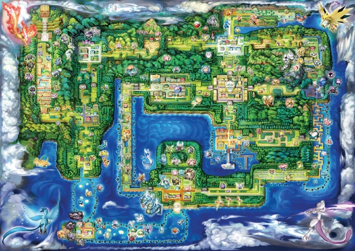

Regions
National Dex numbers. Official regional maps covering Kanto #001 through Paldea #1025. Forms are not separate files in v1. Click a region to open that slice of the dex.
Kanto Map & Habitat Pins
Click glowing survey beacons to inspect landmark ecology and resident Pokémon specimens.

Habitat Type
Pallet Town
Oak Pokémon Research Lab & quiet shores.
OBSERVED SPECIMENS / 栖息标本